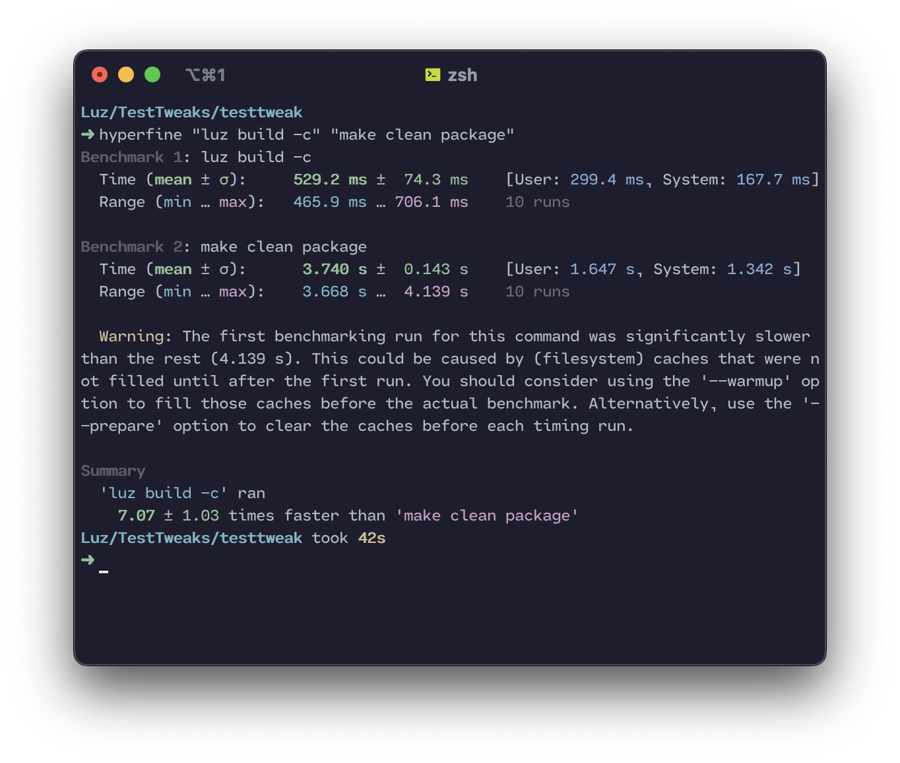

Luz#
Luz is a build system for Apple Darwin-based systems. It’s name is derived from the Spanish word for “light.” It’s meant to be a lightweight, drop in replacement for other build systems such as Dragon and Theos.
Benifits over “theos” and “dragon”#
Note: Luz is a work-in-progress project. Features will change, and bugs will be fixed. If you find a bug, please report it on the GitHub repository.
Speed#
Luz is written in pure Python, and only uses libraries that I’ve created myself. This means that it’s very fast, and can be used on any system that has Python 3.7 or higher installed. Luz especially shines when building projects with submodules, as it can build all of the submodules in parallel. This means that building a project only takes as long as the longest build time of any of the submodules.
Below you can find a benchmark of Luz vs. Theos, using the time comparison tool hyperfine. The same tweak was built (clean) with both build systems.
{kind=link}
Note
This benchmark was ran on a 2020 MacBook Pro with an M1 processor, 8 GB of RAM, and a 256 GB SSD.
As you can see, Luz is much faster than Theos, and is able to build the same project in less than half the time.
Source Code Structure#
Each of Luz’s modules have a different source file, which are all subclassed from a main class called Module. This allows for easy extensibility, and allows for the creation of new modules without having to modify the core of the build system.